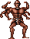
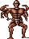
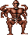
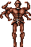

Sobre o projeto
Implementacao do classico Prince of Persia em linguagem Assembly MIPS, desenvolvida para o simulador MARS (MIPS Assembler and Runtime Simulator). O jogo conta com 2 fases, sistema de colisao por tiles, inimigo autonomo, combate com hitbox e efeitos sonoros via MIDI. Os sprites foram adaptados do jogo original de Super Nintendo e editados no Aseprite.
Como executar
- Baixe o MARS Simulator (Java Runtime necessario)
- Abra o arquivo
main.asm(File → Open) - Ative o Bitmap Display (Tools → Bitmap Display): 512x256, base
0x10010000, Unit 1x1, conecte ao MIPS - Ative o Keyboard MMIO (Tools → Keyboard and Display MMIO Simulator), conecte ao MIPS
- Monte com F5 e execute (Run → Set Speed → maximum)
- Clique na janela do teclado MMIO para capturar as teclas
Controles
Estatisticas do projeto
Por categoria
| Categoria | Arquivos | Linhas | % |
|---|---|---|---|
| Logica do jogo | util/*.asm, main.asm, personagem/*.asm, inimigo/*.asm | 1.163 | 39,8% |
| Cenarios (framebuffer) | cenarios/*.asm | 1.094 | 37,5% |
| Sprites | sprites/*.asm | 610 | 20,9% |
| Mapas de tile (colisao) | tiles/*.asm | 34 | 1,1% |
| Scripts Python | scripts/*.py | 2 | — |
Por modulo de logica
| Modulo | Arquivo | Linhas | Responsabilidade |
|---|---|---|---|
| Controles | controlarCenarios.asm | 420 | Input, fisica, colisao, combate, transicoes |
| Renderizacao | renderizarCenario.asm | 230 | Desenho de fundo, dirty rects, delay |
| Som | sons.asm | 128 | 9 efeitos sonoros MIDI |
| Sprites | renderizarPersonagem.asm | 92 | Desenho e restauracao de sprites |
| Colisao | colisoes.asm | 79 | Sistema de tiles 16x16 |
| Renderizacao espelhada | renderizarCenarioEspelhado.asm | 60 | Debug (visualizacao espelhada) |
| Main | main.asm | 48 | Entry point, variaveis globais |
| Primitivas graficas | linhasRetangulos.asm | 44 | Pixel, linha, retangulo |
| IA do inimigo | atualizarInimigo.asm | 33 | Movimento autonomo vertical |
| Controles espelhados | controlarCenariosEspelhado.asm | 29 | Navegacao de debug (J/K/R) |
| Testes | testes.asm | 18 | Bootstrap de testes |
Arquitetura
O codigo segue uma arquitetura modular. Cada sistema do jogo esta em seu proprio arquivo .asm dentro de uma hierarquia de diretorios.
main.asm # Entry point + variaveis globais | +-- util/controle/ | +-- controlarCenarios.asm # Loop principal (input, fisica, combate) | +-- controlarCenariosEspelhado.asm # Debug (navegacao estatica) | +-- colisoes.asm # Sistema de colisao por tiles | +-- util/renders/ | +-- renderizarCenario.asm # Renderizacao de cenarios + dirty rect | +-- renderizarCenarioEspelhado.asm # Renderizacao espelhada (debug) | +-- util/formas/ | +-- linhasRetangulos.asm # Primitivas graficas | +-- util/som/ | +-- sons.asm # Efeitos sonoros MIDI | +-- personagem/ | +-- renderizarPersonagem.asm # Desenho/restauracao de sprites | +-- inimigo/ | +-- atualizarInimigo.asm # IA autonoma do inimigo | +-- cenarios/ # Imagens dos cenarios (dados) +-- tiles/ # Mapas de colisao (dados) +-- sprites/ # Sprites dos personagens (dados) +-- scripts/ # Ferramentas Python de conversao
Fluxo de execucao
O jogo executa em um loop infinito. Cada ciclo:
- Le o teclado via MMIO (endereco
0xFFFF0000) - Interpreta a tecla e dispara a acao correspondente (pulo, ataque, movimento)
- Aplica fisica: gravidade (
velocidade_y += 1), drift horizontal, colisao vertical, pouso - Atualiza cooldown do ataque e verifica contato com o inimigo
- Verifica limites da tela e transicoes de cenario
- Redireciona para o renderizador correto (menu, fase 1 ou fase 2 + inimigo)
Sistema de colisao por tiles
O cenario e dividido em tiles de 16x16 pixels. Cada tile armazena um valor que determina seu comportamento de colisao:
| Valor | Significado | Descricao |
|---|---|---|
| 0 | Vazio | Personagem pode passar |
| 1 | Solido | Parede, chao ou plataforma (bloqueia) |
| 2 | Perigo | Abismo, espinhos ou lava (morte instantanea) |
A bounding box do personagem (9x42 pixels) e verificada em 6 pontos: os 4 cantos mais 2 pontos medios. Cada ponto e convertido em tile pela formula:
tile_X = X / 16 tile_Y = Y / 16 indice = (tile_Y * 32 + tile_X) * 4 # 4 bytes por word
O maior valor entre os 6 pontos e retornado. Os mapas de colisao (stage1 e stage2)
sao matrizes 32x16 armazenadas como words em tiles/stage1.asm e
tiles/stage2.asm.
Sprites
Os sprites dos cenarios foram extraidos do jogo Prince of Persia de Super Nintendo e adaptados com o software Aseprite. O projeto conta com:

prince_idle_right (9x42)

prince_idle_left (9x42)

prince_idle_sword_right (9x42)

prince_idle_sword_left (9x42)

prince_jump_right (50x30)

prince_jump_left (50x30)

prince_attack_sword_right (65x32)

prince_attack_sword_left (65x32)

inimigo1-frame1 (39x50)

inimigo1-frame2 (39x50)

inimigo1-frame3 (39x50)

inimigo1-frame4 (39x50)

walk_left_frames
A transparencia usa color key: pixels com valor 0x00000000 nao sao desenhados.
O sistema de "retangulos sujos" (dirty rectangles) evita redesenhar o fundo inteiro
a cada frame: apenas a area onde o sprite estava no frame anterior e restaurada.
Documentacao das funcoes
controlesCenario infinitamente.
prince_x/y, inimigo_x/y,
velocidade_y/x, no_chao, direcao,
inimigo_vida, atacando, ataque_cooldown e outras.
velocidade_y += 1). Calcula colisao vertical:
se tile=0 permite movimento, tile=1 bloqueia/inverte, tile=2 mata.
Trata pouso no chao (alinha Y ao tile) e drift horizontal do pulo diagonal.
completou_fase: quando o principe atinge a borda direita no cenario 2,
toca a fanfarra de vitoria e volta ao menu.
vai_para_cenario_2: toca som de transicao e configura o cenario 2
com posicao inicial e vida do inimigo resetada.
0xFFFF0000 e retornam o codigo ASCII da tecla pressionada
(ou 0 se nenhuma).
indice = ((Y/16) * 32 + (X/16)) * 4.
Seleciona o mapa correto baseado no cenario atual.
Fora dos limites da tela, retorna tile solido (valor 1).
0xFFFFFFFF
sao transparentes (nao desenhados).
- Cenario 1: se
atualizar_fundo == 1, desenha o fundo completo.
Senao, restaura so a area do sprite anterior (dirty rectangle). Seleciona o sprite
correto (idle, pulo, ataque) conforme o estado do personagem.- Cenario 2: mesma logica do cenario 1, mas adiciona o inimigo: restaura area antiga do inimigo, chama
atualizar_inimigos e desenha
o inimigo na nova posicao.- Cenario 0: desenha o menu principal (imagem estatica).
0x00000000
sao considerados transparentes. Usa loop duplo (linhas x colunas) para
percorrer todos os pixels do sprite.
| Funcao | Evento | Instrumento | Nota | Duracao |
|---|---|---|---|---|
play_som_ataque | Golpe de espada | Gunshot (127) | C5 | 50ms |
play_som_pulo | Pulo | Bird Tweet (123) | G4 | 100ms |
play_som_morte | Morte | Gunshot (127) | C2 | 400ms |
play_som_acerto_inimigo | Acertar inimigo | Fret Noise (122) | C4 | 60ms |
play_som_inimigo_morto | Inimigo derrotado | Brass Section (61) | E4, B4 | 120+200ms |
play_som_fase_completa | Fase concluida | Synth Brass (63) | C4-E4-G4-C5 | 4 notas |
play_som_pouso | Pousar no chao | Melodic Tom (117) | C3 | 80ms |
play_som_transicao | Troca de cenario | Square Wave (80) | C5, C4 | 100+100ms |
play_som_menu | Menu (utilitario) | Synth Voice (54) | C4-E4-G4 | 3 notas |
posicionar_pixel calcula o endereco por base + ((Y << 9) + X) << 2.
desenhar_linha desenha uma linha horizontal.
desenhar_retangulo empilha linhas para formar um retangulo preenchido.
tela_branca preenche a tela inteira com branco (512x256).
Ferramentas de conversao
Dois scripts Python convertem imagens PNG para o formato Assembly usado pelo projeto:
0xFFFFFFFF (transparente no renderizador).
Gera labels de largura e altura automaticamente.
0x00000000 (transparente no renderizador de sprites).
Cenarios